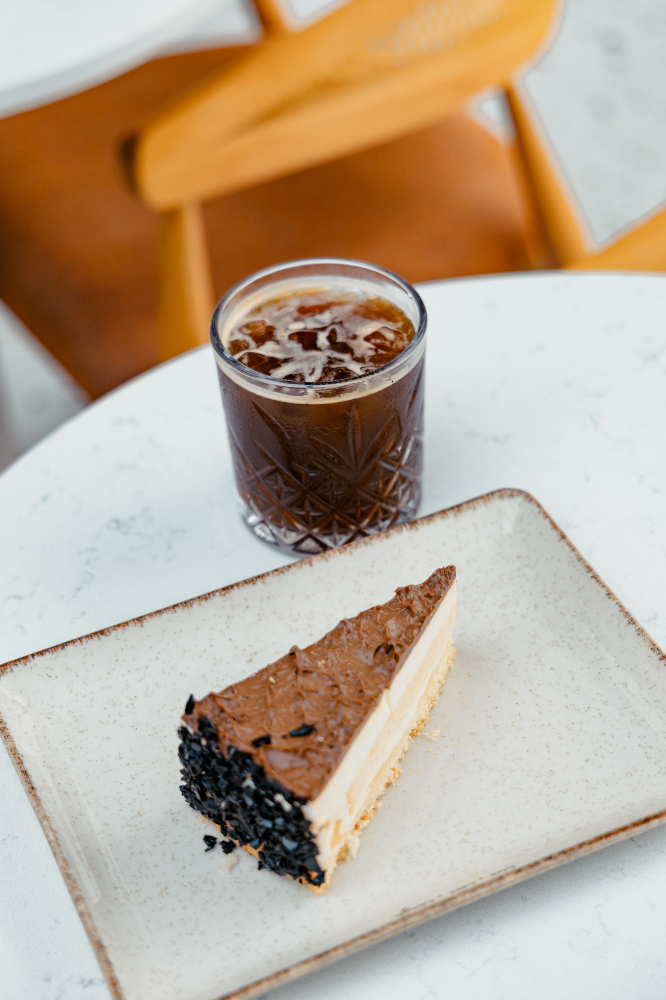

Conoce Atelier Moka
Una cafetería para compartir
Un espacio donde el café, la repostería y las personas son los protagonistas
Así se vive Atelier Moka
Detrás de cada visita hay conversaciones, sonrisas y pequeños momentos que crean la experiencia
Visítanos
Estamos en el centro de Estepona, Málaga.
La dirección es ficticia y forma parte de este proyecto educativo: Avenida del Café, 12, Estepona, Málaga.
Horario
De lunes a viernes: 8:00 - 19:00.
Sábados: 9:00 - 20:00.
Domingos: 9:00 - 14:00.
Combina y disfruta
Estas son algunas de nuestras combinaciones:
| Pack | Incluye | Precio |
|---|---|---|

Desayuno |
Café y tostada | 5,50 € |
|
 Momento dulce |
Café y porción de tarta | 6,00 € |

Merienda |
Bebida y croissant | 5,00 € |
Elaboramos cada café con cuidado
- Seleccionamos el café.
- Preparamos la cantidad adecuada.
- Servimos la bebida.
Preguntas frecuentes
- ¿Tenéis opciones de leche vegetal?
- Sí, ofrecemos bebida de avena y de soja.
- ¿Se pueden pedir productos para llevar?
- Sí, puedes pedir bebidas y productos para llevar.
- ¿Es necesario reservar?
- No es obligatorio, pero puedes contactar con nosotros para consultar disponibilidad.
El café también tiene su técnica
Descubre cómo se prepara un buen café en este vídeo